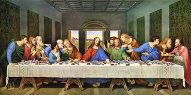

- Mona Lisa – Leonardo da Vinci (1503–1506)
- 🨠The Last Supper – Leonardo da Vinci (1495–1498)
- Digital Arts
- . Refik Anadol – Machine Hallucinations: NATURE
- Frameless – Immersive Art Experience (London)
- PHOTOGRAPHY
- Earthrise†(1968) – William Anders / Apollo 8
🖼️ Mona Lisa (1503–1506) by Leonardo da Vinci the most famous painting in the world. Celebrated for its mysterious smile 😊, lifelike detail, and masterful use of light and shadow, the portrait captures a sense of depth and realism never seen before in art. The identity of the woman, believed to be Lisa Gherardini, adds to the painting’s mystery 🤔. Displayed in the Louvre Museum, Paris, the Mona Lisa remains a timeless symbol of artistic genius 🎨✨.

🍽️ The Last Supper (1495–1498) by Leonardo da Vinci is a world-famous mural painted in the Convent of Santa Maria delle Grazie, Milan. It depicts the dramatic moment when Jesus announces that one of his disciples will betray him 😮. The painting is celebrated for its realistic expressions, perspective, and emotional intensity, bringing each disciple’s reaction to life. Despite centuries of damage and restoration, it remains one of the greatest masterpieces of Renaissance art ✨.
Machine Hallucinations: Nature Dreams is an immersive AI-driven art installation by Turkish-American media artist Refik Anadol. Part of his ongoing Machine Hallucinations series, this work transforms over 300 million publicly available nature-related images—such as flowers, trees, mushrooms, landscapes, and clouds—into a multisensory experience. Utilizing advanced algorithms

Frameless – Immersive Art Experience (London) is a large-scale, permanent digital art exhibition near Marble Arch. It transforms 42 classic masterpieces by artists like Van Gogh, Monet, Dali, and Klimt into 360° immersive projections with music and motion. Visitors walk through four themed galleries, experiencing art in a dynamic, multi-sensory way. The exhibition is interactive, engaging, and offers a fresh perspective on iconic artworks.
This iconic photograph, taken by astronaut William Anders during the Apollo 8 mission, shows the Earth rising above the Moon’s horizon. 🌅 It was the first time humanity saw our planet from this perspective, highlighting its fragility and beauty against the stark lunar landscape. 💙✨ The image became a symbol of environmental awareness and a defining moment in space photography. 📸🌌